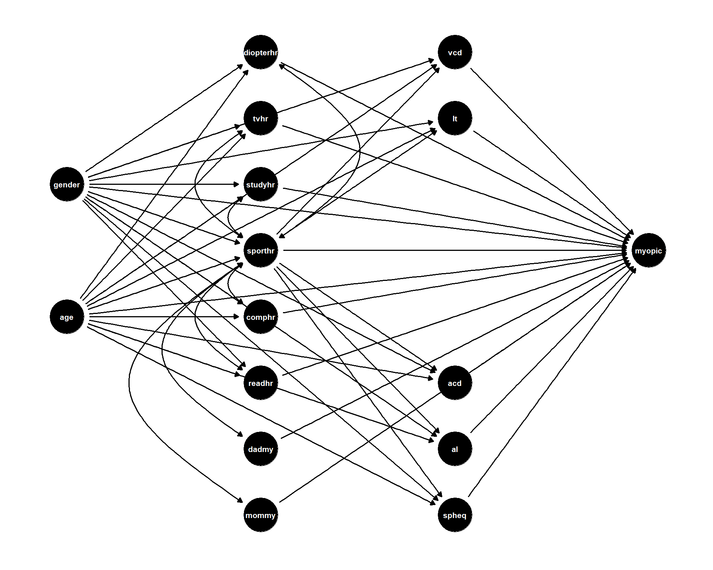
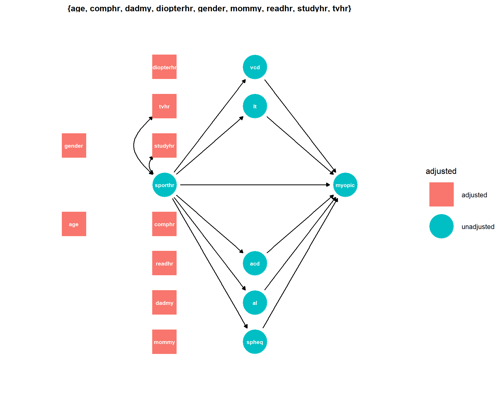

A cross sectional study was conducted to investigate the association between different activity levels and occurrence of myopia among school children of age between 5-9. 618 children were recruited and following variables were measured:
| variable name | description |
|---|---|
| age | Age (Years) |
| gender | Gender (1: Male, 2: Female) |
| spheq | Spherical Equivalent Refraction (diopter) |
| al | Axial length (mm) |
| acd | Anterior Chamber Depth (mm) |
| lt | Lens Thickness (mm) |
| vcd | Vitreous Chamber Depth (mm) |
| sporthr | How many hours per week outside of school the child spent engaging in sports/outdoor activities (Hours per week) |
| readhr | How many hours per week outside of school the child spent reading for pleasure (Hours per week) |
| comphr | How many hours per week outside of school the child spent playing video/computer games or working on the computer (Hours per week) |
| studyhr | How many hours per week outside of school the child spent reading or studying for school assignments (Hours per week) |
| tvhr | How many hours per week outside of school the child spent watching television (Hours per week) |
| diopterhr | Composite of near-work activities (Hours per week) |
| mommy | Was the subject’s mother myopic? (1: No, 2: Yes) |
| dadmy | Was the subject’s father myopic? (1: No, 2: Yes) |
To estimate the extend to which hours spend outside school, engagin in sports/outdoor activity, is associated with risk of myopia among children below 10 years of age
Assuming that there are no unmeasured confounding between myopic and other variables in the data. We can construct a DAG as below. We will also assume that this DAG is encode our current knowledge and is complete.
theme_set(theme_dag_blank())
coords = list(
x = c(mommy=2, dadmy=2, sporthr=2, readhr=2, comphr=2, studyhr=2, tvhr=2, diopterhr=2, myopic=4,
age=1, gender=1, spheq=3, al=3, acd=3, lt=3, vcd=3),
y = c(mommy=-4, dadmy=-3, readhr=-2, comphr=-1, sporthr=0, studyhr=1, tvhr=2, diopterhr=3, myopic=0,
age=-1, gender=1, spheq=-4, al=-3, acd=-2, lt=2, vcd=3)
)
dag1 <- dagify(myopic ~ age+gender+mommy+dadmy+sporthr+readhr+comphr+studyhr+tvhr+diopterhr+spheq+al+acd+lt+vcd,
mommy ~~ sporthr ,
dadmy ~~ sporthr,
sporthr ~~ readhr,
sporthr ~~ comphr,
sporthr ~~ studyhr,
sporthr ~~ tvhr,
sporthr ~~ diopterhr,
sporthr ~ age+gender,
readhr ~ age+gender,
comphr ~ age+gender,
studyhr ~ age+gender,
tvhr ~ age+gender,
diopterhr ~ age+gender,
spheq ~ age+gender+sporthr,
al ~ age+gender+sporthr,
acd ~ age+gender+sporthr,
lt ~ age+gender+sporthr,
vcd ~ age+gender+sporthr,
exposure ="sporthr",
outcome = "myopic", coords = coords)ggdag(dag1, text_size =2.8, node=T)
To know which variables to adjust for in our model, we can use ggdag_adjustment_set() function.
ggdag_adjustment_set(dag1, text_size=2.8)
Because we are interested in the total effect of sporthr, we will not adjust for the descendants of sporthr.
The data is available from the aplore3 package. We can load the necessary libraries and data as follows:
library(learnr)
library(aplore3)
library(tableone)
library(stargazer)
library(tidyverse)
data(myopia)We look at the distribution of continuous variables
layout(matrix(c(1:10), nrow=2, ncol=2, byrow = T))
boxplot(myopia$age, main="Boxplot of age")
hist(myopia$age)
boxplot(myopia$al, main="Boxplot of al")
hist(myopia$al)
boxplot(myopia$acd, main="Boxplot of acd")
hist(myopia$acd)
boxplot(myopia$lt, main="Boxplot of lt")
hist(myopia$lt)
boxplot(myopia$vcd, main="Boxplot of vcd")
hist(myopia$vcd)c("sporthr","readhr","comphr","studyhr","tvhr","diopterhr")
layout(matrix(c(1:12), nrow=2, ncol=2, byrow = T))
boxplot(myopia$sporthr)
hist(myopia$sporthr)
boxplot(myopia$readhr)
hist(myopia$readhr)
boxplot(myopia$comphr)
hist(myopia$comphr)
boxplot(myopia$studyhr)
hist(myopia$studyhr)
boxplot(myopia$tvhr)
hist(myopia$tvhr)
boxplot(myopia$diopterhr)
hist(myopia$diopterhr)For categorical variables we can tabulate them using the tableone package
tab1 <- CreateTableOne(data=myopia,
vars=c("myopic","gender","mommy","dadmy"), includeNA = TRUE)
print(tab1, showAllLevels=TRUE)
level Overall
n 618
myopic (%) No 537 (86.9)
Yes 81 (13.1)
gender (%) Male 316 (51.1)
Female 302 (48.9)
mommy (%) No 305 (49.4)
Yes 313 (50.6)
dadmy (%) No 310 (50.2)
Yes 308 (49.8) tab1 <- CreateTableOne(vars=c("age","gender","sporthr",
"readhr","comphr"),
strata = "myopic",
data=myopia,
includeNA=TRUE,
test=FALSE)
print(tab1, showAllLevels=TRUE)Excersise 2: Create the tableone for variables c("studyhr","tvhr","diopterhr", "mommy","dadmy")
tab2<- CreateTableOne(vars=c("studyhr","tvhr","diopterhr", "mommy","dadmy"),
strata = "myopic",
data=myopia,
includeNA=TRUE,
test=FALSE)
print(tab2, showAllLevels=TRUE)Because most of the continuous variables are not normally distributed we will use spearman’s correlation.
corr1 <- corr(myopia[, c("age","spheq","al","acd","lt","vcd","sporthr")], method="spearman") %>%
round(corr1, digits = 2)corr <- corr(myopia[, c("age","spheq","al","acd","lt","vcd",'sporthr',"readhr",'comphr','studyhr','tvhr','diopterhr')],
method="spearman") %>%
round(corr, digits = 2)uniregs <- list()
uniregs[[1]] <- glm(myopic ~ age, data=myopia, family=binomial(link="logit"))
uniregs[[2]] <- glm(myopic ~ gender, data=myopia, family=binomial(link="logit"))
uniregs[[3]] <- glm(myopic ~ sporthr, data=myopia, family=binomial(link="logit"))
uniregs[[4]] <- glm(myopic ~ readhr, data=myopia, family=binomial(link="logit"))
uniregs[[5]] <- glm(myopic ~ studyhr, data=myopia, family=binomial(link="logit"))
stargazer(uniregs[1:5], type="text", report="vcs", ci=TRUE, omit.table.layout = "n", digits=2)Exercise 4: Follow the same startegy as above and add the univariate regression outputs for rest of the potential confounders to the same object uniregs and print the coefficients.
uniregs[[6]] <- glm(myopic ~ tvhr, data=myopia, family=binomial(link="logit"))
uniregs[[7]] <- glm(myopic ~ diopterhr, data=myopia, family=binomial(link="logit"))
uniregs[[8]] <- glm(myopic ~ mommy, data=myopia, family=binomial(link="logit"))
uniregs[[9]] <- glm(myopic ~ dadmy, data=myopia, family=binomial(link="logit"))
uniregs[[10]] <- glm(myopic ~ comphr, data=myopia, family=binomial(link="logit"))
stargazer(uniregs[6:10], type="text", report="vcs", ci=TRUE, omit.table.layout = "n", digits=2)Now we can build our multivariable logistic regression model as follows:
glm <- glm(myopic ~ age + gender + mommy + dadmy +
sporthr + readhr + comphr + studyhr + tvhr + diopterhr ,
data=myopia, family=binomial(link="logit"))
stargazer(glm, type="text", report="vcs", ci=TRUE, omit.table.layout = "n", digits=2)
=====================================
Dependent variable:
-------------------
myopic
-------------------------------------
age 0.27
(-0.10, 0.65)
genderFemale 0.42
(-0.10, 0.94)
mommyYes 0.87
(0.36, 1.38)
dadmyYes 1.03
(0.51, 1.54)
sporthr -0.04
(-0.08, -0.01)
readhr 0.09
(0.02, 0.17)
comphr 0.03
(-0.04, 0.11)
studyhr -0.11
(-0.25, 0.04)
tvhr 0.01
(-0.04, 0.05)
diopterhr
Constant -4.75
(-7.27, -2.23)
-------------------------------------
Observations 618
Log Likelihood -218.81
Akaike Inf. Crit. 457.61
=====================================The diopterhr variable do not have a coefficient. Probably due to high collinearity R took it out
We need to report the effect measures in Odds ratio scale. An example with only one independent variable:
glm1 <- glm(myopic ~ sporthr,
data=myopia, family=binomial(link="logit"))
# Exponentiate the logodds (betas) to odds ratios
ors <- exp(coef(glm1))
# Compute their confidence intervals
cis <- exp(confint.default(glm1))
# Use the above objects in stargazer
stargazer(glm1, type="text", report="vcs",
coef=list(ors),
ci.custom = list(cis),
omit.table.layout = "n",
digits=2)glm2 <- glm(myopic ~ age + gender + mommy + dadmy +
sporthr + readhr + comphr + studyhr + tvhr,
data=myopia, family=binomial(link="logit"))
# Exponentiate the logodds (betas) to odds ratios
ors2 <- exp(coef(glm2))
# Compute their confidence intervals
cis2 <- exp(confint.default(glm2))
# Use the above objects in stargazer
stargazer(glm2, type="text", report="vcs",
coef=list(ors2),
ci.custom = list(cis2),
omit.table.layout = "n",
digits=2)